leia
An unstructured Finite-Volume Level Set Method in OpenFOAM
Semi-Lagrangian level set
characteristic (semi-Lagrangian) advection · weighted least-squares reconstruction · 2D & 3D convergence
Tomislav Marić · Julian Reitzel · Mathis Fricke · Dieter Bothe
MMA, TU Darmstadt
libleiaLevelSet | solver leiaSemiLagrangeLevelSetFoam
Authors: T. Marić · J. Reitzel · M. Fricke · D. Bothe — MMA, TU Darmstadt
Roadmap
- 1The level set & the phase indicator — \(\psi\), advection, geometric & analytic \(\alpha\)
- 2Semi-Lagrangian advection — characteristics, the Taylor foot, UQWLSR reconstruction; 2D & 3D convergence
- 3Two-phase flow — one-field Navier–Stokes, surface tension from the reconstructed curvature, the static droplet
- 4Conclusions — what works best
- 5Software design — runtime model selection, extend without touching existing code
Part 1 of 5
The level set & the phase indicator
\(\psi\), its advection, and recovering \(\alpha\) geometrically / analytically
- 1The level set & the phase indicator
- 2Semi-Lagrangian advection
- 3Two-phase flow
- 4Conclusions
- 5Software design
Previously: Title & roadmap · Next: Semi-Lagrangian advection
The level set
Signed-distance field \(\psi(\mathbf{x},t)\):
\[ \Sigma = \{\mathbf{x} : \psi = 0\}, \quad \Omega^{-}=\{\psi<0\} \;(\text{phase A}) \]Signed-distance property
\[ |\nabla\psi| = 1 \]Distance to \(\Sigma\); sign encodes the phase.
Advection
Conservative transport of the level set:
\[ \frac{\partial \psi}{\partial t} + \nabla\!\cdot(\mathbf{u}\,\psi) = S \]discretised with the finite-volume flux \(\phi = (\mathbf{u}_f\cdot\mathbf{S}_f)\):
fvm::ddt(psi) + fvm::div(velExt->phi(), psi) == source->fvmsdplsSource(psi, U)Phase indicator / Heaviside
Volume fraction of phase A in cell \(c\):
\[ \alpha_c = \frac{1}{|\Omega_c|}\int_{\Omega_c} H(-\psi)\,\mathrm{d}V, \qquad H(s)=\begin{cases}1 & s>0\\ 0 & s\le 0\end{cases} \]Problem: an algebraic Heaviside of the transported \(\psi\)
- is only first order at the interface, and
- relies on \(\psi\) staying a signed distance (\(|\nabla\psi|=1\)).
Both assumptions are violated by advection.
Idea: recover \(\alpha\) geometrically
Per cell, build a linear reconstruction of \(\psi\):
\[ \psi^{\ell}_c(\mathbf{x}) = \mathbf{n}_c\cdot\mathbf{x} + d_c \]then compute \(\alpha_c\) as the fraction of the cell below that plane.
- \(\alpha\) inherits the order of \(\psi\)
- no \(|\nabla\psi|=1\) requirement
LLS reconstruction
Shared code: levelSetPlaneReconstruction
Fit the plane over cell \(c\) and its neighbours \(N_c\) by least squares:
\[ \min_{\mathbf{n}_c,\,d_c}\; \sum_{k\in\{c\}\cup N_c}\big(\psi_k-(\mathbf{n}_c\cdot\mathbf{x}_k+d_c)\big)^2 \]Normal equations — a \(4\times4\) system for \((n_x,n_y,n_z,d_c)\):
\[ \left[\begin{array}{cccc} \sum x_k^2 & \sum x_k y_k & \sum x_k z_k & \sum x_k \\ \sum x_k y_k & \sum y_k^2 & \sum y_k z_k & \sum y_k \\ \sum x_k z_k & \sum y_k z_k & \sum z_k^2 & \sum z_k \\ \sum x_k & \sum y_k & \sum z_k & N \end{array}\right] \!\begin{bmatrix} n_x\\ n_y\\ n_z\\ d_c \end{bmatrix} =\begin{bmatrix} \sum \psi_k x_k\\ \sum \psi_k y_k\\ \sum \psi_k z_k\\ \sum \psi_k \end{bmatrix} \]2D fix: in an empty direction, row/col is decoupled and \(n_{\text{cmpt}}\!=\!0\)
is pinned → keeps the \(4\times4\) system non-singular (mesh.geometricD()).
Geometric Heaviside
geometricPhaseIndicator — clip the cell against the plane
The below-plane sub-volume is found by polygon/polyhedron intersection (divergence-theorem volume of the clipped cell).
Analytic volume fraction — Detrixhe & Aslam (2016)
Decompose the cell into tets (cell centroid \(\mathbf{x}_c\), face centroid \(\mathbf{x}_f\), face-edge vertices):
Sort vertex distances \(\psi_1\!\le\!\psi_2\!\le\!\psi_3\!\le\!\psi_4\). Fraction of the tet in \(\Omega^{-}\):
Analytic volume fraction — properties
Assemble the cell value as the tet-volume-weighted mean:
\[ \alpha_c = \frac{\sum_t f_t\,V_t}{\sum_t V_t} \]Tolerance-free: the denominators are cross-interface distance gaps, bounded away from zero, so there is no clipping tolerance — it matches the polygon clipping to machine precision on the same plane, and stays robust in 2D.
The middle (two-in / two-out) case uses the corrected \(\Omega^{-}\) form — the paper's printed numerator gives the complement.
geometric vs detrixheAslam — 2nd order to the exact area

Static (\(t=0\)) verification. Initialise the circle
(\(r=0.15\)) on the pseudo-2D shear-vortex mesh at \(N=32\!\to\!256\); the indicator volume
\(V_\alpha=\sum_c\alpha_c V_c\) converges to the exact cylinder volume
\(\pi r^2 t_z\) — equivalently the circle area \(\pi r^2\) with the slab height
\(t_z=0.1\) divided out — at order \(\approx 2\). Both indicators build the
same LLS plane, so their volumes are identical to 8 digits;
detrixheAslam is the tolerance-free, 2D-robust integration.
Part 2 of 5
Semi-Lagrangian advection
the parallel research line: don't fix the velocity — follow the characteristic
- 1The level set & the phase indicator
- 2Semi-Lagrangian advection
- 3Two-phase flow
- 4Conclusions
- 5Software design
Previously: The level set & the phase indicator · Next: Two-phase flow
Semi-Lagrangian — motivation: skip the equation, follow the flow
Two routes to an accurate \(\psi\) near \(\Sigma\). Velocity extension (Part 2) corrects where the velocity points, then advects with a flux scheme. Semi-Lagrangian advection corrects nothing: it uses the exact property of pure advection — \(\psi\) is constant along characteristics.
For each arrival cell centre \(\mathbf{x}_c\) at \(t^{n+1}\), trace the characteristic backward to its departure foot \(\mathbf{x}_d\) at \(t^n\) and copy the value:
\[ \psi^{n+1}(\mathbf{x}_c) = \psi^{n}(\mathbf{x}_d). \]Why it is solve-free and stable for CFL \(\le 1\) → next slide. Courant–Isaacson–Rees (1952); foot: Marić thesis §6.3.1.
Semi-Lagrangian — why it works
- No flux, no divergence, no linear solve — a per-cell assignment.
- Unconditionally stable for CFL \(\le 1\): the foot stays inside the arrival cell's point-neighbour hull ⇒ evaluation is interpolation, never extrapolation ⇒ no cell search.
- Accuracy is set by the reconstruction, not the time step — a high-order fit at the foot gives a high-order scheme at any stable CFL.
Courant–Isaacson–Rees (1952); Taylor-displacement foot: Marić PhD thesis §6.3.1, eqs. (165)–(167).
The backward foot — explicit Taylor displacement
Trace the characteristic backward with the Taylor-series point-displacement integrator (Marić thesis eqs. 165–167), fully explicit, at cell centres:
\[ \mathbf{x}_d = \mathbf{x}_c - \mathbf{u}_c^{n+1}\,\Delta t + \tfrac{1}{2}\Big[\tfrac{\mathbf{u}_c^{n+1}-\mathbf{u}_c^{n}}{\Delta t} + \big(\mathbf{u}_c^{n+1}\!\cdot\nabla_c\big)\mathbf{u}^{n+1}\Big]\Delta t^2 \]- Per-step displacement error \(O(\Delta t^3)\); with quadratic spatial reconstruction the scheme is globally \(O(h^2)\) at fixed CFL. The \(\tfrac12\) is essential — drop it and the local error falls to \(O(\Delta t^2)\).
- \(\partial_t\mathbf{u}\approx(\mathbf{u}^{n+1}-\mathbf{u}^{n})/\Delta t\) (backward Euler) is first-order — sufficient, it multiplies \(\Delta t^2\).
- \(\nabla_c\mathbf{u}^{n+1}\) is the least-squares cell gradient
(fvSchemes key
gradU,pointCellsLeastSquares) — never Green–Gauss. Works unchanged when \(\mathbf{u}\) is a Navier–Stokes field, not only analytic. - Guard: if \(|\mathbf{x}_c-\mathbf{x}_d|\) exceeds the stencil radius (CFL > 1) the code warns and the step is clipped — no silent extrapolation.
- Robustness: a generous value cap (\(\pm10\times\) stencil range) prevents runaway overflow without touching a well-behaved reconstruction; a Barth–Jespersen slope limiter is available but measured to cost convergence order (over the wide point-neighbour stencil) — off by default.
Verified: for uniform \(\mathbf{u}\) the acceleration term vanishes and \(\mathbf{x}_d = \mathbf{x}_c - \mathbf{u}\,\Delta t\) exactly (unit test, \(\sim\!10^{-14}\)).
Semi-Lagrangian — formulation & algorithm
Governing relations (per time step \(t^n\!\to\!t^{n+1}\)):
\[ \frac{D\psi}{Dt}=0 \;\;\Longrightarrow\;\; \boxed{\;\psi^{n+1}(\mathbf{x}_c)=\psi^{n}(\mathbf{x}_d)\;} \] \[ \mathbf{x}_d=\mathbf{x}_c-\mathbf{u}_c^{n+1}\Delta t +\tfrac12\Big[\underbrace{\tfrac{\mathbf{u}_c^{n+1}-\mathbf{u}_c^{n}}{\Delta t}}_{\partial_t\mathbf{u}} +\underbrace{(\mathbf{u}_c^{n+1}\!\cdot\nabla_c)\mathbf{u}^{n+1}}_{(\mathbf{u}\cdot\nabla)\mathbf{u}}\Big]\Delta t^2 \] \[ \psi^{n+1}_c=\psi_c^{n}+\phi_c\big(R_c(\mathbf{x}_d)-\psi_c^{n}\big),\qquad \mathrm{CFL}=\frac{|\mathbf{x}_d-\mathbf{x}_c|}{r_{\text{stencil}}}\le 1 \]\(R_c\): per-cell reconstruction of \(\psi^n\) over the cell–point–cell (CPC) stencil; \(r_{\text{stencil}}\): max stencil-cell distance; \(\phi_c\!\in\![0,1]\): Barth–Jespersen limiter (\(=1\) by default). No flux, no divergence, no linear solve.
Per-step algorithm (slAdvection::advect):
- Gather \(\psi^n\) & cell centres over each cell's CPC stencil —
one paired halo exchange (
mapDistribute; remote proc/cyclic neighbours native). - \(\nabla\mathbf{u}^{n+1}\leftarrow\) LSQ gradient (fvSchemes
gradU). recon.update(\(\psi^n\)): build the per-cell polynomial \(R_c\).- For each cell \(c\): form acceleration \(\mathbf{a}_c\), foot \(\mathbf{x}_d\) (boxed formula); guard \(|\mathbf{x}_d-\mathbf{x}_c|\le r_{\text{stencil}}\).
- \(v\leftarrow\) limited \(R_c(\mathbf{x}_d)\); robustness: non-finite \(\to\) stencil mid, else generous cap \(\pm10\times\) range.
- \(\psi^{n+1}_c\leftarrow v\);
correctBoundaryConditions();postAdvect()hook.
Explicit, per-cell, embarrassingly parallel; the only communication is step 1. Local displacement error \(O(\Delta t^3)\) \(\Rightarrow\) \(O(h^2)\) at fixed CFL with a quadratic \(R_c\).
Reconstruction of \(\psi^n\) at the foot — the quadratic value fit
Runtime-selectable (levelSet { semiLagrangian { reconstruction ...; } }).
It reproduces the cell value: evaluate(c, x_c) == psi[c] exactly.
| model | form | order | cost / notes |
|---|---|---|---|
quadraticWeightedLeastSquares ★ |
one IDW-weighted quadratic value fit over the CPC stencil | \(O(h^2\text{–}h^3)\) incl. CFL\(\,1\) | production — the robust choice; cached pseudo-inverse (1 halo exchange); the single simultaneous fit stays high-order at every CFL |
uncachedQuadraticWeightedLeastSquares |
the same value fit, per-cell Cholesky each step (no cache) | identical (cell-for-cell) | memory-lean implementation (~37% less RAM, \(O(1)\)/cell) — lifts the large-\(N\) / polyhedral ceiling; ~1.4× the CPU of the cached fit |
- The fit is a weighted least squares over the cell–point–cell stencil (linear-exact on arbitrary polyhedra), fitting the value increments directly — no Green–Gauss and no injected gradient anywhere in the chain.
- Unit-tested exact: a global quadratic \(\psi\) is reproduced to \(\sim\!10^{-16}\), the cell-centre value to \(0\); the cached and uncached fits agree cell-for-cell to \(\sim\!10^{-13}\).
quadraticWeightedLeastSquares — the weighted least-squares fit
Fit the full quadratic (2D shown; the empty direction is dropped) to the increments \(\psi_i-\psi_c\), \(\mathbf{d}_i=\mathbf{x}_i-\mathbf{x}_c\), over the cell–point–cell stencil:
\[ R_c(\mathbf{x})=\psi_c+\sum_{k=1}^{n_k}a_k\,b_k(\mathbf{d}),\qquad \mathbf{b}=\big(d_x,\,d_y,\,\tfrac12 d_x^2,\,\tfrac12 d_y^2,\,d_xd_y\big),\quad n_k=5 \] \[ \mathbf{a}=\arg\min_{\mathbf{a}}\sum_{i=1}^{N}w_i^{2}\big(\mathbf{b}(\mathbf{d}_i)\!\cdot\!\mathbf{a}-(\psi_i-\psi_c)\big)^2, \quad w_i=\frac{1}{|\mathbf{d}_i|},\quad A_{ik}=w_i\,b_k(\mathbf{d}_i) \] \[ \mathbf{a}=\underbrace{(A^{\top}A)^{-1}A^{\top}}_{\text{Moore–Penrose }A^{+}\,(\text{QR})}\,\mathbf{b}_w, \;(b_w)_i=w_i(\psi_i-\psi_c) \;\;\xrightarrow{\text{fold }M_{ki}=A^{+}_{ki}w_i}\;\; a_k=\sum_i M_{ki}(\psi_i-\psi_c) \]Fitting \((\psi_i-\psi_c)\) forces \(R_c(\mathbf{x}_c)=\psi_c\) exactly. Mesh geometry is static \(\Rightarrow\) \(A^{+}\) (hence \(M\)) is built once per cell; each step is then one contiguous mat–vec — no per-cell allocation. \(n_k=9\) in 3D (3 linear + 3 pure-quadratic + 3 cross).
quadraticWeightedLeastSquares — the stencil & the fit
- The cell–point–cell (CPC) stencil: the arrival cell \(\mathbf{x}_c\) plus all cells sharing a point with it (8 in 2D structured, up to 26 in 3D) — wider than a face-neighbour stencil, so a full quadratic is over-determined.
- Inverse-distance weights \(w_i=1/|\mathbf{d}_i|\): the near axial neighbour (heavy arrow) dominates the fit; the far diagonal (light) is down-weighted — this is what keeps the Hessian bounded and second order even when the foot \(\mathbf{x}_d\) reaches the stencil edge (CFL 1).
- The fitted quadratic \(R_c\) is evaluated once, at the departure foot \(\mathbf{x}_d\) (hollow), giving \(\psi^{n+1}_c=R_c(\mathbf{x}_d)\).
- Remote (processor / cyclic) stencil cells are gathered by the single paired halo exchange — serial and \(np{=}4\) agree to \(\sim\!10^{-12}\).
quadraticWeightedLeastSquares — discretization (UFVM, parallel)
- Stencil (mesh-adaptive): cell-point-cell
(
centredCPCCellToCellStencil) on hex — a hex cell has only 6 face-neighbours, below the 9 a 3D quadratic needs; cell-face-cell (centredCFCCellToCellStencil) on polyhedra — ~12–16 faces already over-determine the fit, and the compact stencil is ~3–4× smaller (cheaper & better-conditioned).collectDatagathers the remote (processor / cyclic) neighbours via amapDistribute— one halo exchange of \(\psi^n\) per step; the cell centres are gathered once. - Fit: per cell, minimise \(\sum_n w_n\big(P(\mathbf{d}_n)-(\psi_n-\psi_c)\big)^2\) over the quadratic basis \(\{d_x,d_y,[d_z],\tfrac12 d_x^2,\tfrac12 d_y^2,[\tfrac12 d_z^2], d_xd_y,[\ldots]\}\) (the empty direction is dropped on 2D meshes), IDW weights \(w_n=1/|\mathbf{d}_n|\). Fitting \((\psi_n-\psi_c)\) drops the constant ⇒ the centre value is reproduced exactly.
- Solve: Moore–Penrose pseudo-inverse (
QRMatrix, Householder QR). The stencil geometry is fixed while the mesh is static ⇒ the per-cell pseudo-inverse is cached once; the per-step cost is one small matrix–vector product per cell. Under-determined boundary cells fall back to a linear fit (counted).
Source:
src/leiaLevelSet/semiLagrangian/
(slAdvection, slReconstruction + 3 models); solver
leiaSemiLagrangeLevelSetFoam.
Mesh-adaptive stencil — CPC (hex) vs CFC (polyhedra)
a 3D quadratic needs \(\ge 9\) neighbours; a hexahedron has only 6 face-neighbours, so the stencil is chosen per mesh
Shaded: arrival cell \(\mathbf{x}_c\); dots: stencil-neighbour centres. CPC reaches through shared vertices (enough terms on hexahedra); CFC through shared faces is compact and better-conditioned where the face valence is high.
quadraticWeightedLeastSquares — the hot loop
- Performance (hpctoolkit-profiled): that per-cell mat–vector product was ~28% of the whole solver and did not vectorise. Folding the IDW weight into the cached map and storing it flat row-major (so the update is a contiguous pointer reduction with no per-cell allocation) cut it to ~20% — −17% wall-clock, −23% CPU at \(N{=}128\), machine-precision identical. (A hand-unrolled mat–vec regressed — the stencil is too short — and was reverted.)
- Dedicated scheme keys
gradPsi/gradGradPsi/gradU(allpointCellsLeastSquares) — the sub-steps never share thegrad(psi)advection scheme.
Parallel-verified: serial ≡ np=4 to \(10^{-12}\)
(halo exchange of \(\psi^n\) via mapDistribute).
Cache-free evaluation — UQWLSR
the uncached quadratic weighted least-squares reconstruction: same arithmetic, no per-cell cache — trade memory for compute
quadraticWeightedLeastSquares
- per-cell pseudo-inverse map, \(O(N_c\,m\,n_i)\)
- per step: streamed mat–vec ⇒ bandwidth-bound (~0.25 flop/byte)
- hard DRAM ceiling at large \(N\); forces single precision
uncached… (UQWLSR)
- per step: assemble \(M=A^{\!\top}W^2A\) (\(m\times m\)) + in-place Cholesky
- compute-bound (~2 flop/byte) ⇒ scales with cores, no ceiling
- stencil geometry tail-eliminated — interior cells read mesh centres directly
Peak RSS at \(128^3\) (8 ranks): 6.6 GB (cached) → 4.6 GB (UQWLSR), −30% — identical up to floating-point reassociation.
The linear reconstruction line — a companion method
A separate, fully documented method line uses a LINEAR reconstruction of \(\psi^n\) at the foot. There are two ways to build it — and they behave oppositely:
nestedLSQ (the method) | linearTaylor (the trap) | |
|---|---|---|
| gradient | least-squares slope over the stencil | arrival cell's single cell gradient |
| pure-advection stability | stable, converges (CFL \(\le\tfrac12\)) | UNSTABLE: \(\||\nabla\psi|-1\|\to10^{21}\) |
| 2D shape order | \(\approx\)1.1 | \(-\)0.9 (diverges) |
- stencil averaging, not polynomial degree, is what makes it stable: same linear basis, opposite behaviour
nestedLSQis a low-cost, memory-light (\(O(1)\)/cell, no ceiling) stable kinematic transport method — below UQWLSR accuracy, by design
Full verification (all errors, 2D + 3D, hex + poly) + the linearTaylor
divergence: the companion lsl deck + paper
(docs/linear-semi-lagrangian-level-set/, make sl-linear).
linearTaylor: unstable in advection, yet the two-phase workhorse
The advection-unstable linearTaylor is exactly the
reconstruction of the two-phase consistent-linear pipeline. Its dissipation damps the
curvature-feedback loop the reinit-free quadratic transport leaves undamped; the coupled
solver's own dissipation + short pre-equilibrium horizon keep it in its stable regime:
| 2D stationary droplet, blow-up time [s] | N=64 | N=128 | N=256 |
|---|---|---|---|
| quadratic pipeline (UQWLSR + reconstructed κ) | 0.44 | 0.105 | 0.035 |
| quadratic + 2nd-order face delivery (stabilized foot point), unfiltered | — | — | 0.035 |
| quadratic + 2nd-order face delivery + biharmonic ψ-filter (θ=0.05) | > 0.1 | > 0.1 | > 0.1 |
| consistent-linear (linearTaylor + FVM κ) | 0.80 | 0.125 | > 0.1 |
unfiltered 2nd-order delivery: runaway onset (\(\max|U|{>}0.1\) m/s) at \(t{=}0.033\) (N=256) and \(t{=}0.010\) (N=512) — the seed shrinks 30×, the onset does not move; filtered N=512 and the \(t{=}0.3\) horizon runs pending.
- no contradiction: coupled result is relative (linear less destabilizing in the loop); kinematic instability is absolute (long reversible integration)
- recipe: UQWLSR for kinematics;
nestedLSQfor low-cost stable transport;linearTaylorunder two-phase capillary coupling
slAdvection::advect() — code
const scalar dt = mesh_.time().deltaTValue();
const volTensorField gradU(fvc::grad(Unew, "gradU")); // LSQ grad u^{n+1}
recon_->update(psi); // fit psi^n (halo + QR)
forAll(C, c)
{
const vector accel = (Unew[c] - Uold[c])/dt // du/dt (backward Euler)
+ (Unew[c] & gradU[c]); // (u.grad)u
const point xd = C[c] - Unew[c]*dt + 0.5*accel*dt*dt; // Taylor backward foot
// guard: |xd - C[c]| within the point-neighbour stencil radius (CFL<=1)
newPsi[c] = recon_->evaluate(c, xd); // psi^{n+1}(x_c)=psi^n(x_d)
}
psi.primitiveFieldRef() = newPsi; // assign, then BCs
psi.correctBoundaryConditions();
// quadraticWeightedLeastSquares::evaluate -- the arrival cell's OWN cached polynomial:
// d = x - C[c]; return psi_c + sum_k coeffs_c[k] * basis_k(d);Steps 3 and 5 are embarrassingly parallel per-cell loops;
the only communication is the one halo exchange inside recon_->update().
Serial and np=4 results match to round-off.
2D convergence — high order to \(N=256\), CFL-independent
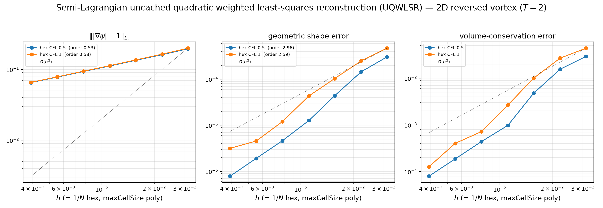
Reversed vortex, \(T=2\), quadraticWeightedLeastSquares, on a
uniform \(\sqrt2\) refinement ladder (\(N=32\!\to\!256\), cells \(\times2\) per level).
Geometric shape and volume-conservation error both converge at \(\approx\) order 3
at CFL \(\tfrac12\) (2.97 / 2.98) and stay high-order at CFL 1 (2.59 / 2.94)
— the order is independent of the Courant number up to the stability bound.
(The \(\||\nabla\psi|-1\|\) order \(\approx0.5\) reflects the absence of reinitialization,
not the transport accuracy. The CFL-1 finest-pair dip is the \(O(\Delta t^2)\)
departure-foot error crossing the \(O(h^3)\) spatial error — the CFL-1:CFL-\(\tfrac12\)
error ratio reaches exactly \(4=\mathrm{CFL}^2\) at \(N{=}256\).)
2D vortex — ALL error measures
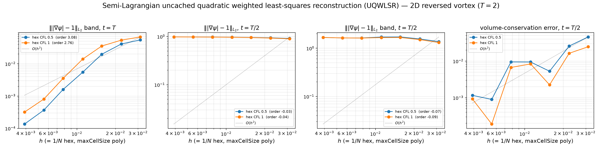
The remaining error measures completing the picture: band-restricted \(\||\nabla\psi|-1\|\) at \(t=T\) (what the numerics near the interface actually see), the half-time (\(t=T/2\), maximum stretching) gradient defect globally and in the band, and the half-time volume error. The half-time gradient defect saturates toward \(O(1)\) on every mesh — reinitialization-free transport does not maintain the signed-distance property through maximal deformation; the transport accuracy (shape/volume, previous slide) converges regardless.
2D vortex — volume-fraction field evolution
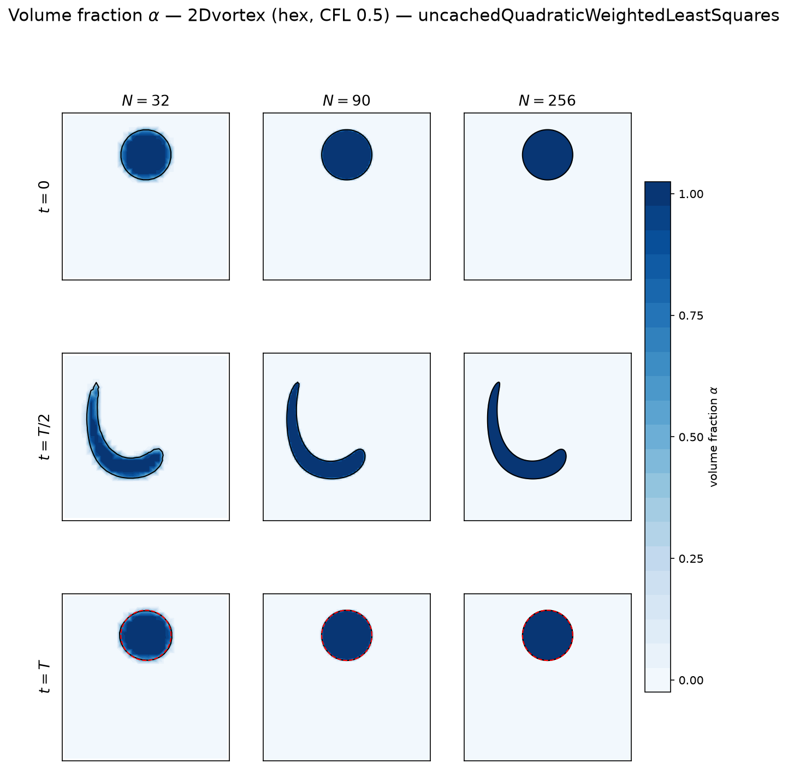
\(\alpha\) at \(t=0,\,T/2,\,T\) (rows) across the ladder (columns), CFL \(\tfrac12\). Black: the \(\psi=0\) level set; dashed red on the \(t=T\) row: the exact reversed circle. The filament tail thins below the cell size at \(T/2\) on the coarse meshes and is lost irreversibly; refinement recovers the reversed circle at the measured orders — the field-level picture behind the convergence plots.
Semi-Lagrangian in 3D — two prescribed flows, hex & polyhedral
3D shear — shear3D, domain
\([0,1]^2\times[0,2]\) ⇒ \(N\times N\times 2N\) cubic cells (\(h=1/N\)).
3D deformation — LeVeque deformation3D,
unit cube \([0,1]^3\) ⇒ \(N^3\) cells. Stretch/fold then unwind.
Both start from a sphere \(r=0.15\) and, with the oscillation factor, reverse at \(T=3\): the exact solution returns to the initial sphere, so the reversed error is a true accuracy measure (no closed-form mid-flow needed).
- Reconstruction:
uncachedQuadraticWeightedLeastSquares— the memory-lean implementation of the production fit (identical accuracy), so the finest grids fit on the 15 GB box. - Hexahedral, uniform \(\sqrt[3]{4}\) ladder (cells \(\times4\)/level, \(h=1/N\)): shear \(N=32,50,80,128\); deformation \(N=32,50,80,128,160\). CFL \(\tfrac12\).
- Polyhedral (cfMesh
pMesh) at the matching \(\mathtt{maxCellSize}=1/N\) — the same method on unstructured cells (withclipToStencilBoundsfor robustness on irregular stencils). - Phase indicator
detrixheAslam; 8 MPI ranks (scotch), serial\(\equiv\)parallel verified. Norms: gradient \(\||\nabla\psi|-1\|_{L_2}\), geometric shape error, volume conservation.
config/uncachedConv3Dshear.yaml · config/uncachedConv3Ddeformation.yaml · …3D{shear,deformation}Poly.yaml.
3D shear — convergence (hex & polyhedral)
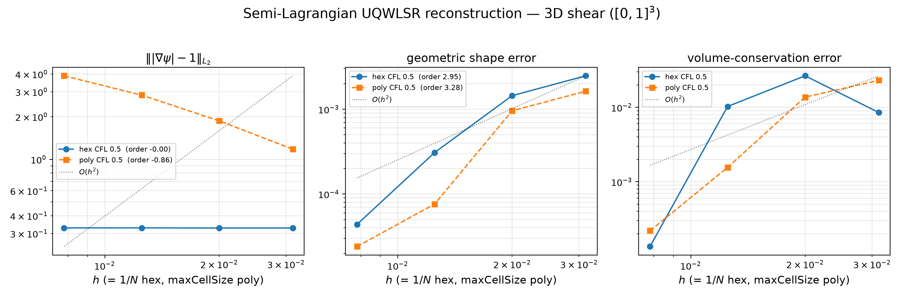
Reversed 3D shear, \(T=3\), quadraticWeightedLeastSquares, CFL \(\tfrac12\),
uniform \(\sqrt[3]{4}\) ladder. On the hexahedral mesh (\(N=32\!\to\!128\), solid) the
geometric shape error converges at \(\approx\) order 2.5 (volume \(\approx O(h^3)\)) —
the 2D second-order result carries into 3D. The polyhedral run (cfMesh, face-neighbour
stencil, dashed) is a 2-resolution spot-check (finer poly-shear levels are prohibitive on
the 15 GB box) with errors of comparable magnitude; the reliable hex↔poly order match
is on the deformation case (4 poly levels, next slide).
3D shear — ALL error measures
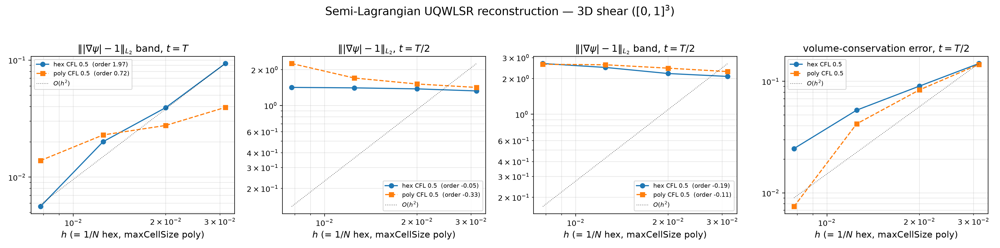
Band-restricted and half-time (\(t=T/2\), rolled sheet) error measures of the 3D shear case, hex and polyhedral overlaid. Same reading as in 2D: the transport errors converge, the half-time gradient defect — the signed-distance property under maximal stretching — does not.
3D deformation — convergence (hex & polyhedral)
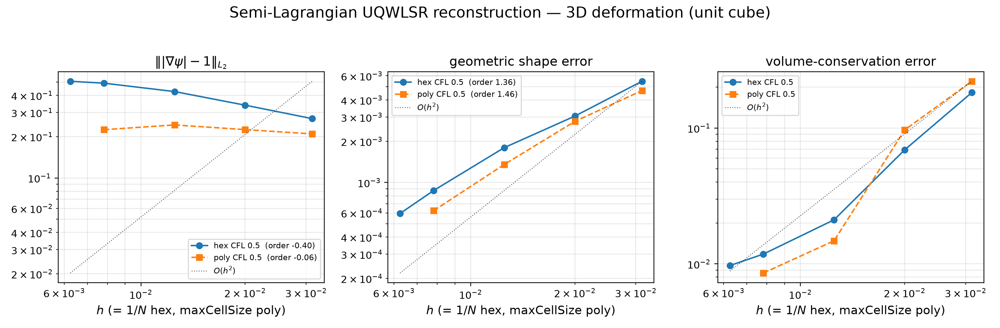
Reversed LeVeque deformation (unit cube), \(T=3\),
quadraticWeightedLeastSquares, CFL \(\tfrac12\), uniform \(\sqrt[3]{4}\) ladder.
The hardest prescribed 3D test: the sphere is drawn into a thin filament at \(T/2\), under-
resolved on these grids, so shape converges at order \(\approx1.4\) (below the
filament-free shear's \(\approx2.5\)). Crucially, hexahedral (\(N=32\!\to\!160\), 5 levels) and
polyhedral (cfMesh, \(1/32\!\to\!1/128\), 4 levels) converge at the same order
(shape 1.36 vs 1.46; volume 1.86 vs 2.51) — the method is mesh-agnostic even on the
hardest case. This is the reliable hex↔poly comparison (4–5 levels each).
3D deformation — ALL error measures
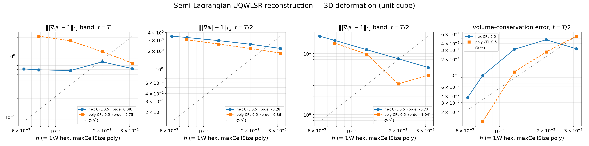
Band-restricted and half-time (\(t=T/2\), thin filament) error measures of the deformation case, hex and polyhedral overlaid. The filament state is the hardest gradient-quality test of the suite: the half-time defects sit highest here, while the reversed-state transport errors (previous slide) still converge mesh-agnostically.
3D shear — interface evolution
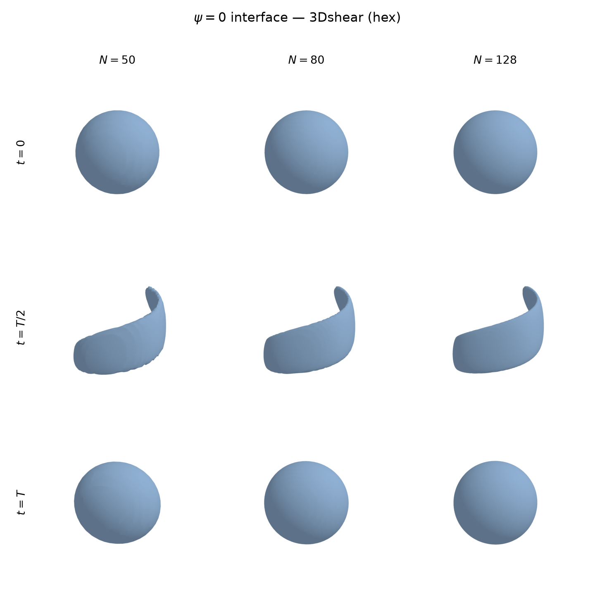
Reversed 3D shear (hexahedral): the \(\psi=0\) fluid interface at \(t=0\) (sphere), \(t=T/2\) (rolled sheet) and \(t=T\) (recovered sphere), for the three finest resolutions. Rendered straight from the simulation fields (foamlib + VTK) by the Snakemake study.
3D deformation — interface on hexahedra
LeVeque deformation, \(t=0/T/2/T\) (rows) \(\times\) three finest resolutions (columns) on hexahedral meshes. Thin filament at \(T/2\), recovered sphere at \(T\). Compare with the polyhedral mesh (next slide).
3D deformation — interface on polyhedra (cfMesh)
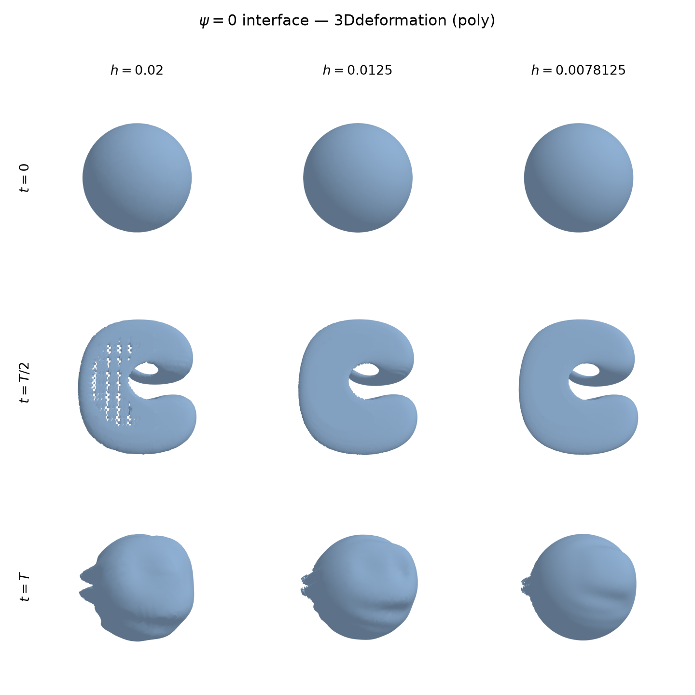
The same LeVeque deformation on polyhedral (cfMesh) meshes, rendered identically. The interface matches the hexahedral result — the visual counterpart of the mesh-agnostic convergence.
Part 3 of 5
Two-phase flow
same transport, now driven by Navier–Stokes — surface tension from the reconstructed curvature
- 1The level set & the phase indicator
- 2Semi-Lagrangian advection
- 3Two-phase flow
- 4Conclusions
- 5Software design
Previously: Semi-Lagrangian advection · Next: Conclusions
Coupling the level set to the flow
The same SL transport now runs with a Navier–Stokes velocity instead of a prescribed one. Once per time step:
- Reinitialisation-free — the SL update preserves the profile; no redistancing.
- Advance the interface once per step (first outer corrector), then hold it fixed while pressure–velocity iterate — as interFoam holds \(\alpha\).
- Solver
leiaSemiLagrangianLevelSetTwoPhaseFoam: the advection library dropped into a one-field PIMPLE solver.
One-field incompressible Navier–Stokes
a single velocity and pressure; the phase fraction \(\alpha\) selects the fluid
\[ \nabla\!\cdot\mathbf u = 0 \] \[ \partial_t(\rho\mathbf u)+\nabla\!\cdot(\rho\,\mathbf u\mathbf u) = -\nabla p_{\mathrm d}-(\mathbf g\!\cdot\mathbf x)\nabla\rho +\nabla\!\cdot\!\big[\mu(\nabla\mathbf u+\nabla\mathbf u^{\!\top})\big] +\mathbf f_\sigma \] \[ \rho=\alpha\rho_1+(1-\alpha)\rho_2,\qquad \mu=\alpha\mu_1+(1-\alpha)\mu_2 \]- \(p_{\mathrm d}=p-\rho(\mathbf g\!\cdot\mathbf x)\): dynamic pressure, removing the hydrostatic head from the balance.
- PISO/PIMPLE with a Rhie–Chow face flux; laminar here. Static droplet: \(\mathbf g=\mathbf 0\Rightarrow p_{\mathrm d}\equiv p\).
Curvature estimation — the fit's own derivatives, at the cell centre
CSF needs the interface curvature; the estimator reads it symbolically off the same quadratic WLS fit the transport already builds, \(R_c(\mathbf d)=\psi_c+\mathbf g\!\cdot\mathbf d+\tfrac12\mathbf d^{\!\top}\mathbf H\mathbf d\):
\[ \mathbf f_\sigma=\sigma\,\kappa\,\nabla\alpha,\qquad \kappa=\nabla\!\cdot\!\Big(\tfrac{\nabla\psi}{|\nabla\psi|}\Big) =\frac{\operatorname{tr}(\mathbf H)\,|\mathbf g|^2-\mathbf g^{\!\top}\mathbf H\mathbf g}{|\mathbf g|^3} \quad\text{at the cell centre, }\mathbf d=\mathbf 0. \]- \(\mathbf g,\mathbf H\) are read off the fit coefficients (CPC stencil, IDW weights, per-cell quadratic→linear→constant fallback) — no FVM re-differentiation of the (noisy, non-signed-distance) \(\psi\); computed in the narrow band, far cells keep \(\kappa=0\).
- No foot-point extension. \(\mathbf H\) is constant over a cell's fit, so the fit's curvature is pinned to the stencil centre wherever it is evaluated: at the faces, the Newton gradient-flow foot measures \(O(h^{1.08})\), the trust-region closest-point foot \(O(h^{1.13})\) — indistinguishable from no extension at all (\(O(h^{1.13})\)).
- The cell value is therefore the curvature of the \(\psi\)-contour through the evaluation point, a parallel curve of the interface: \(\kappa_d=\kappa/(1+d\kappa)\). This \(O(h)\) offset is the leading, structural error of every classical delivery — the next two slides measure it at the cells, then remove it at the faces, where the force lives.
- Balanced-force [Francois 2006]: \(\sigma\kappa_f\,\mathrm{snGrad}(\alpha)\) enters the pressure Poisson on the same faces as \(\mathrm{snGrad}(p)\) and is differenced against it — constant \(\kappa_f\) is absorbed exactly, so spurious currents track only the \(\kappa_f\) error.
Curvature accuracy at the cells — first order, by geometry
currents are curvature-error-limited ⇒ measure the curvature error directly, no flow solve (leiaTestMeanCurvature). NOTE: this slide measures the cell field vs \(1/R\); the delivered face value is the next slide.
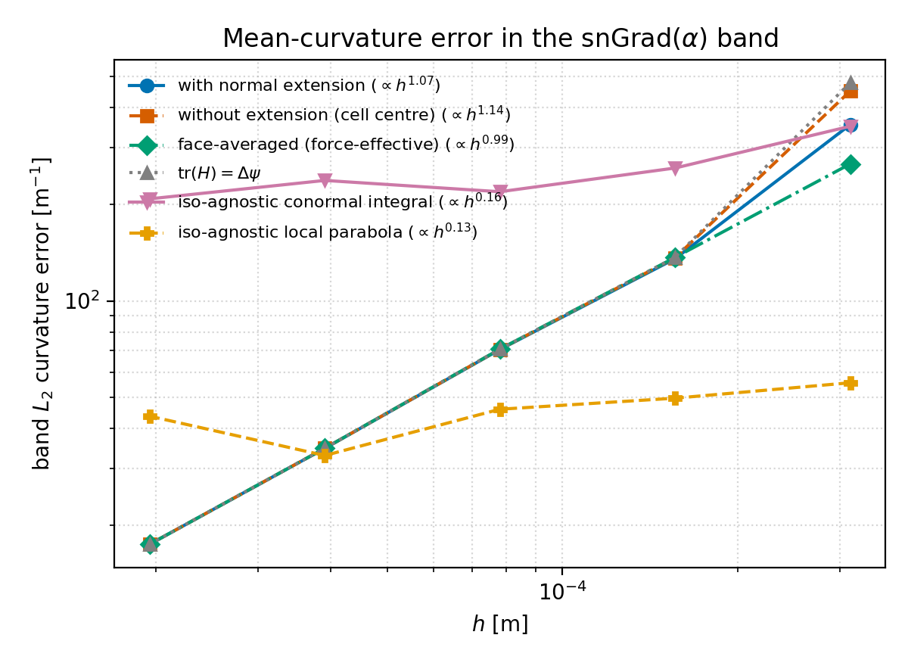
- Circle SDF; error of \(\kappa\) vs exact \(1/R\) in the \(\mathrm{snGrad}(\alpha)\) band (the NS-relevant cells), \(N=32\to512\).
- First order by geometry, not by estimator quality: every band cell sits at offset \(|d|\sim h\) from the interface, so its \(\kappa\) is the parallel-contour value \(\kappa/(1+d\kappa)\) — an \(O(h)\) term no cell-side improvement can remove. Measured: \(\|\kappa-\kappa_e\|_2=O(h^{1.07})\) (\(R^2{=}0.995\); rel.\ \(L_2\) \(35.4\%\to1.7\%\)). The earlier \(N{=}512\) reading (\(1.0\%\)) was biased low by a plane-LSQ degeneracy-guard bug that silently halved the \(\mathrm{snGrad}(\alpha)\) band at fine \(h\) (fixed; the honest full-band value is \(1.7\%\)).
- The \(O(h)\) error is the parallel-contour offset, not the estimator: the Newton-foot and closest-point extensions leave the face-centered error unchanged (\(O(h^{1.08})/O(h^{1.13})\) vs \(O(h^{1.13})\) plain) — the fit's constant Hessian pins its curvature to the stencil centre no matter where the foot lands. \(\mathrm{tr}(H)=\Delta\psi\) coincides as \(h\to0\).
- Re-referencing the interpolated face value to the interface with the stabilized foot point removes exactly that offset term and restores second order, \(O(h^{2.04})\) — the delivery, not the fit, is the bottleneck (next slide).
Curvature delivery — stabilized foot-point re-referencing at the faces
the measured best combination: quadratic WLS estimation + interface re-referencing of the face value — exactly what the solver does, step by step
- \(\kappa_f=\) linear face interpolation of the cell \(\kappa\) (the classical CSF value) — \(\approx\) the contour curvature at the face centre \(\mathbf x_f\), so it carries the offset defect: measured \(O(h^{1.13})\).
- On each active face (\(|\mathrm{snGrad}\,\alpha|>0\) — the only faces the force uses; all others keep the plain value): each adjacent cell computes the signed distance \(d_P,\,d_N\) from \(\mathbf x_f\) to its own zero set \(\{R_c=0\}\) with the stabilized foot-point algorithm — surface-point Newton onto \(\{R_c=0\}\), foot of \(\mathbf x_f\) on the tangent plane there, parabola-corrected step from the two step vectors, re-project; converged at \(|\Delta|<10^{-6}r_{\text{stencil}}\); the foot must stay inside the stencil trust region; signed along the model gradient.
- Inverse-\(|\psi|\) side weighting \(\;d_f=\dfrac{d_P|\psi_N|+d_N|\psi_P|}{|\psi_P|+|\psi_N|}\) — the near-interface cell's fit dominates.
- Parallel-curve inverse \(\;\kappa_f^\Gamma=\dfrac{\kappa_f}{1-d_f\,\kappa_f}\) — algebraically exact for a circle; skipped where \(|1-d_f\kappa_f|\le\tfrac12\) (past half the local curvature radius) or where both foot searches fail. It must act on the face-combined \(\kappa_f\): correcting each side before combining loses the order (measured \(O(h^{1.40})\)).
- The result is the registered face field kappaStableFootFace, consumed by the balanced-force flux \(G_{\sigma,f}=\sigma\,\kappa_f^\Gamma\,\mathrm{snGrad}(\alpha)\,|S_f|\) in the momentum predictor and the pressure corrector. Preconditions: offsetCorrection none (anything else double-corrects — the solver refuses to run) and a quadratic reconstruction.

Static circle, exact SDF, \(|S_f|\)-weighted \(L_2\) on the active faces: every classical delivery \(\approx O(h^{1.1})\); re-referenced \(O(h^{2.04})\) (\(R^2{=}0.999\)), \(11.35\to0.105\) m\(^{-1}\) at \(N{=}512\) — 108×.
Selected by levelSet.curvatureExtension { type stabilizedFootPointFace; } + surfaceTensionForce { faceCurvatureSource registered; } — the face field plugs into the existing registered-curvature hook; no force-model change.
Verification: the stationary droplet
water/air, \(R=1\) mm, \(\sigma/R=72.74\) Pa (Lippert et al. 2022) — the exact solution is quiescent
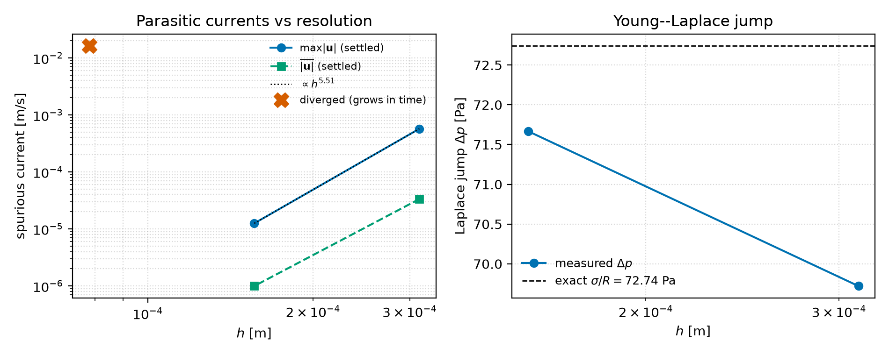
- Laplace jump converges to \(\sigma/R\): rel. error \(4.2\%\to1.5\%\) at \(N=32\to64\) — curvature is accurate & correctly signed.
- At \(N=32,64\) the parasitic currents decay to a small settled level (settled \(\max|\mathbf u|\) drops \(\approx\!46\times\), 32\(\to\)64). No reinitialisation, no auxiliary curvature field.
- The coupling is balanced-force: \(\sigma\kappa_f\,\mathrm{snGrad}(\alpha)\) is differenced against \(\mathrm{snGrad}(p)\) on the same faces in the pressure Poisson — constant \(\kappa\Rightarrow\) zero current. So the currents are set by the curvature error.
- Honest caveat: at \(N\ge128\) the currents grow instead — and it is a universal, \(h\)-driven instability (every resolution diverges, coarse just later; next slides). Instrumented tests rule out the force, the formula, the capillary CFL, \(|\nabla\psi|\)-degeneracy and the density ratio — it is a curvature-error-seeded parasitic feedback.
- Cost: explicit capillary step \(\Delta t\lesssim\tfrac14\Delta t_\sigma\propto h^{3/2}\) ⇒ steps \(\sim\!N^{3/2}\), wall \(\sim\!N^3\) (2D).
The parasitic-current instability — what it is (and isn't)
instrumented per-step + frozen-interface + resolution-scaling controls (each cause tested, not assumed)
Ruled out — each verified:
- Not a force imbalance — balanced-force: constant \(\kappa\Rightarrow\) zero current.
- Not the curvature formula — on a clean SDF the classical delivery converges \(O(h^{1.1})\) (the parallel-contour offset) and the foot-point re-referenced \(\kappa_f\) reaches \(O(h^{2.04})\), yet both blow up unfiltered; the residual angular seed is a small \(\cos4\theta\) grid-anisotropy bias.
- Not a capillary-CFL violation — \(\Delta t{=}\tfrac14\Delta t_\sigma\) is inside Brackbill's sum-density limit; coarser mesh uses bigger \(\Delta t\) yet is more stable \(\Rightarrow\) \(h\)-driven, not \(\Delta t\).
- Not \(|\nabla\psi|\)-degeneracy — \(|\nabla\psi|\approx0.85\!-\!1.1\) at the spikes (\({>}1\) at the poles); the no-extension run diverges with \(|\nabla\psi|\approx0.94\).
- Not the density ratio — equal-\(\rho\) still diverges (it sets the amplitude, not the onset).
What it is: a universal, \(h\)-driven feedback.
The \(\cos4\theta\) curvature-error seed \(\to\) parasitic current \(\to\) interface distortion \(\to\) larger error. Freezing \(\psi\) removes the runaway (it is transport-coupled). Every resolution diverges — coarse just later:
| \(N\) | 32 | 64 | 128 | 256 |
|---|---|---|---|---|
| \(t_{\text{blow}}\) [s] | 0.47 | 0.44 | 0.11 | 0.03 |
\(t_{\text{blow}}\sim N^{-3/2}\) at the fine end (the capillary clock \(\propto h^{3/2}\)). The "stable" \(N\le64\) runs are the quiescent phase seen before their later onset.
Stabilizing the parasitic current — the development path
every lever tested against the \(N{=}128\) static-droplet onset
| lever | effect on the onset |
|---|---|
| Euler time (1st order, L-stable) | the stable baseline — damps the grid-scale capillary mode |
| backward (2nd-order time) | worse — removes the L-stable damping (needs \(\Delta t_\sigma/8\)) |
| smaller / adaptive \(\Delta t\) | only delays — \(h\)-driven, already inside the CFL |
| curvature normal extension (foot-point Newton) | worse — the projection amplifies \(\kappa\) \(40\!-\!85\times\) |
| harmonic (Laplace) curvature smoothing | worse — coupling correlates the error force |
| cell-local (no-extension) \(\kappa\) | most stable curvature choice ⇒ default |
| consistent geometric mass flux (upwind \(\alpha_f\)) | blow-up \(97\) orders gentler; onset unchanged |
| Kang/GFM interface-weighted \(\kappa_f\) | statics \(58\times\) better, coupled loop worse (blows \(0.07\) vs \(0.44\)) |
| CST integral model (sign-corrected) | first reachable equilibrium at \(N{=}64\); \(N{=}128\) blows at \(0.047\) |
| stabilized foot-point face re-referencing | statics \(O(h^{2.04})\), \(108\times\) at \(N{=}512\); coupled seed \(30\times\) lower, onset unchanged (\(0.035\) at \(N{=}256\)) |
| + biharmonic band \(\psi\)-filter (\(\theta{=}0.05\)) | closes the loop: full \(t{=}0.1\) at \(N{=}64\!-\!256\), band \(|\nabla\psi|\) pinned, \(\kappa\)-error flat |
Verdict: the seed is the curvature-delivery error (fixed: foot-point re-referencing, \(O(h^{2.04})\)); the exponent is the transported-\(\psi\) profile feedback, untouched by any delivery accuracy — the sharper the static balance, the higher the feedback gain. The pairing that survives is second-order delivery + minimal profile maintenance (the band \(\psi\)-filter); signed-distance consistency remains the structural lever.
Lecture: the two forces at a face
The balanced-force CSF discretisation (Francois et al. 2006; Popinet 2009) places BOTH the surface-tension force and the pressure gradient at faces, with the same discrete operator:
\[ f_{\sigma,f} = \sigma\,\kappa_f\,(\nabla_f \alpha)\cdot \hat{\mathbf S}_f \qquad\text{vs.}\qquad (\nabla_f p)\cdot \hat{\mathbf S}_f \]In the collocated face-flux arrangement (interFoam family), the pressure equation and the flux correction see exactly these face values — so the balance question is decided face by face, never cell by cell.
"Balanced-force" is the PAIRING. Whether the pair actually cancels depends entirely on the face curvature \(\kappa_f\) that is fed in — the next slides make that precise.
Lecture: a worked example — one matrix row, real numbers
Three-cell strip, water/air droplet values: \(\sigma = 0.0727\) N/m, constant \(\bar\kappa = 1/R = 1000\) m\(^{-1}\); \(\alpha = (1,\,1,\,0)\) — one jump face:
Surface tension acts on exactly one face: \(f_{\sigma,f} = \sigma\bar\kappa\,(\alpha_N-\alpha_P)/\delta = -\,\sigma\bar\kappa/\delta\).
The pressure field \(p = p_0 + \sigma\bar\kappa\,\alpha\) — a jump of \(\sigma\bar\kappa = 72.7\) Pa — produces \((\nabla_f p) = \sigma\bar\kappa\,(\alpha_N-\alpha_P)/\delta\) on the SAME face: the two terms cancel row by row in the matrix, and on every other face both are zero.
Result: exact discrete rest, at any resolution. No smallness argument, no limit — an identity.
Lecture: what the pressure can — and cannot — cancel
The worked example generalises: constant \(\kappa_f=\bar\kappa\) makes the force a discrete gradient of a cell field, \(\;\sigma\bar\kappa\,\nabla_f\alpha = \nabla_f(\sigma\bar\kappa\,\alpha)\), and the pressure solve absorbs ANY discrete gradient exactly — that is precisely what \(\nabla\!\cdot\!\nabla p = \nabla\!\cdot\!f\) does, every step.
The discrete Helmholtz split. Any face force decomposes into a gradient part + a rotational remainder (nonzero circulation around cell loops). Pressure — a scalar cell field — can only ever match the gradient part.
When \(\kappa_f\) VARIES along the force support, the remainder is nonzero: no cell field's face differences can reproduce unequal \(\kappa\) values around a loop.
Verified: converging \(p_{\mathrm{rgh}}\) to \(10^{-14}\) changes nothing — the rotational remainder drives flow at ANY solver accuracy.
Punchline: the pressure removes the gradient part to machine precision every step; whatever remains is FLOW — permanently injected, step after step.
Measured in flux space: the projection is converged, the residual is structural
The models return a FACE FLUX; the pressure equation sees its discrete divergence \(\sum_f \sigma\kappa_f(\nabla\alpha)^n_f|\mathbf S_f|\,r_{AU,f}\) and the velocity receives only what the pressure flux fails to match, \(R_f=\phi_{g,f}-(\text{pressure flux})_f\). On a uniform mesh the split is exact:
\(\sigma\langle\kappa\rangle_f\,\mathrm{snGrad}(\alpha) = \underbrace{\sigma\,\mathrm{snGrad}(\kappa\alpha)}_{\text{absorbed exactly}} - \underbrace{\sigma\langle\alpha\rangle_f\,\mathrm{snGrad}(\kappa)}_{\text{the entire driver}}\)
| N=128, t ≤ 0.02 | \(R_f/G_\sigma\) at \(t_0\) | median | \(\max|\mathbf u_{res}|\) at \(t_0\) | peak \(\max|\mathbf u|\) | \(p\) final resid. |
|---|---|---|---|---|---|
| arithmetic, GAMG | 1.49e-3 | 4.13e-5 | 2.49e-3 | 4.44e-3 | 2.9e-10 |
| arithmetic, PCG \(10^{-11}\) | 1.49e-3 | 4.13e-5 | 2.49e-3 | 4.44e-3 | 8.6e-12 |
| foot point, GAMG | 1.80e-4 | 3.89e-5 | 3.04e-4 | 1.10e-3 | 2.6e-10 |
| foot point, PCG \(10^{-11}\) | 1.80e-4 | 3.89e-5 | 3.04e-4 | 1.10e-3 | 8.4e-12 |
- Not the linear solver: 30× tighter pressure residual (265 PCG iterations vs 4–17 GAMG) changes every entry by \(\le 2.4\times10^{-4}\) relative — \(R_f\) is the genuine non-gradient part of \(G_\sigma\). (Perturbed meshes differ: there the strict solve gained 18–29×.)
- Not
fvc::reconstruct: it is proportional, not amplifying (velocity fraction 1.4e-3 vs flux fraction 1.5e-3). The projection absorbs 99.85–99.98%; the remainder hurts only because the capillary predictor velocity is \(\approx1.7\) m/s at this \(h\). - The 2nd-order delivery's edge is transient: 8.3× smaller residual at \(t_0\), 1.78× at \(t{=}0.02\), 6% in the run median — the coupled state, not the initial accuracy, sets \(R_f\).
- Since the driver is \(\mathrm{snGrad}(\kappa)\), a 2nd-order \(\kappa_f\) yields a 1st-order force error; and only its tangential part is physical (\(\kappa\) is constant along normals for exact geometry).
Instrumented in pEqn.H → capillaryFluxResidual.csv;
table regenerated by make_capillary_residual_table.py into
data/tables/capillary_flux_residual.csv.
Lecture: where the \(\kappa_f\) errors come from (quadratic SL)
| source | character | measured scale | details |
|---|---|---|---|
| parallel-contour \(\kappa\): the cell reads its OWN isosurface, \(\kappa_d = \kappa/(1{+}d\kappa)\) | static, structural | 8–30% of \(1/R\) across the force support (N=128) | → parallel curves |
| arithmetic face average mixes the two contour values | static, delivery | \(O(h^{1.13})\) at the faces | → cured by the stabilized foot-point re-referencing (\(O(h^{2.04})\)); Kang measured \(O(h^{1.14})\) — not a cure |
| grid-anisotropy \(\cos4\theta\) bias of the CPC fit (poles vs diagonals) | static, convergent | 0.6% → 0.05% (N=64→256) | the angular seed |
| 2h profile modes aliasing into the tangential Hessian | dynamic, run-fed | sign-flipping \(O(\varepsilon/h)\) | → the amplifier |
| support pairing: sharp geometric \(\alpha\) vs smeared delivery | static, delivery | staircase / support cliffs | → E3 verdicts |
Two of these are load-bearing: the parallel-contour structure makes a face-constant \(\kappa_f\) UNREACHABLE for any interface shape (Defect 1 — no equilibrium exists), and the tangential-Hessian aliasing converts run-time \(\psi\)-profile strain into coherent force errors (Defect 2 — the amplifier). The rest set constants, not the fate.
Lecture: standing currents vs the EXPLOSION
Non-constant \(\kappa_f\) alone does NOT explode. With the interface pinned (diagnostic control) the rotational force residue drives a bounded standing eddy — measured \(\sim\!2\times10^{-2}\) at N=128, DECREASING under refinement at \(O(h^{1.6})\). That is the classic, benign spurious current.
The explosion is the closed loop:
\( \text{standing current} \;\to\; \psi\text{-profile strain} \;\to\; \text{Hessian response} \;\to\; \kappa_f \text{ error growth} \;\to\; \cdots \)
- The decisive control (E4): cut the feedback (fixed velocity pump, \(\psi\) advects passively) — error grows LINEARLY (\(R^2=0.995\)). Close the loop — exponential, e-folding \(4.6\) ms at N=128.
- Loop gain scales like \(1/h\): \(t_{\mathrm{blow}} = 0.466/0.444/0.105/0.032\) at \(N=32/64/128/256\) — fine meshes do not have larger errors, they have a faster amplifier.
- One line: the imbalance sets the seed; the \(\psi\)-feedback sets the exponent.
The evidence-ladder slide isolates each rung of this claim with a dedicated control run.
Lecture: nothing is frozen — the coupling map
Per time step (production configuration — every field evolves):
SL-advect \(\psi\) (first outer corrector; Taylor foot from \(\mathbf u^{n},\mathbf u^{n-1}\)) → narrow band → \(\alpha(\psi)\) → \(\kappa(\psi)\) → \(f_\sigma\) → PIMPLE momentum + pressure correctors (\(\psi\) held WITHIN the step across correctors — exactly interFoam's \(\alpha\) treatment)
- Frozen-\(\psi\)/frozen-flow states exist ONLY as explicitly gated diagnostic probes — and they are the proof instruments: freezing removes the explosion \(\Rightarrow\) the explosion lives in the evolution feedback, not in the static force error.
- Why can't the evolution relax it? Relaxation needs a reachable state \(\psi^\ast\) whose estimated \(\kappa_f\) is face-constant. For the cell-centred level-set \(\kappa\), the parallel-contour geometry forbids such a state for EVERY shape — \(\psi\) keeps moving, searching for a rest state that cannot exist, and the motion pumps the Defect-2 modes.
- The constructive counter-example: give the discretisation a reachable equilibrium (CST integral force, N=64) and the currents DID decay three and a half decades — everything evolving, reinitialisation-free.
Lecture: force balance is a property of the input
Summarising the sequence:
- The machinery pairs \(f_{\sigma,f}\) and \(\nabla_f p\) on the same faces with the same operator; a constant \(\kappa_f\) telescopes into \(\nabla_f(\sigma\bar\kappa\alpha)\) and is absorbed exactly — a matrix identity.
- Verified in this code: the
constantCurvaturecontrol gives solver-tolerance currents — the machinery is exact. - Everything therefore hangs on the input \(\kappa_f\): its non-constant part is un-cancellable (rotational), its dynamic response to \(\psi\)-strain sets the growth exponent.
- The interesting question is no longer "is the discretisation balanced?" but: can this estimator ever PRODUCE a face-constant input? — the equilibrium question, next.
Lecture: equilibrium is a property of the estimator
Numerical equilibrium (Popinet 2009): the parasitic current transports the interface until the discretely evaluated curvature becomes face-constant — then the force is a pure gradient, and the currents decay to round-off. Height functions famously reach this state.
Formally: let \(\mathcal K\) be the map from the scheme's state (here: the level-set field \(\psi\)) to the face curvature. Equilibrium requires a reachable state \(\psi^\ast\) with
\[ \mathcal K(\psi^\ast)\big|_f = \text{const on the force support}\quad (\text{faces where } \nabla_f\alpha \neq 0). \]- Balance = "constant \(\kappa_f\) cancels" (previous slide, always true).
- Equilibrium = "the state space contains a point where my own estimator returns a constant" — this depends entirely on what the estimator reads.
- The two are routinely conflated; the static droplet separates them cleanly.
Lecture: the obstruction — parallel curves
The symbolic estimator \(\kappa=(\mathrm{tr}\,H\,|\mathbf g|^2-\mathbf g^{\!\top}\!H\mathbf g)/|\mathbf g|^3\) is profile-invariant: for \(\psi=f(d(\mathbf x))\), \(\mathbf g = f'\mathbf n\), \(H = f'H_d + f''\,\mathbf n\mathbf n^{\!\top}\), and the formula returns \(\mathrm{tr}\,H_d\) exactly, for any monotone profile \(f\).
So it always reports the curvature of the isosurface through the cell centre. But the band isosurfaces are (near-)parallel curves, and a parallel curve at normal offset \(d\) has
\[ \kappa_d = \frac{\kappa}{1 + d\,\kappa} \;\neq\; \kappa \qquad (\text{circle: } \kappa_d = 1/(R+d)). \]Consequence: \(\kappa_f\) varies along the normal across the 2–3-cell force support for every interface shape — and no \(\psi\)-profile change can alter it (invariance!). The reachable state space contains no balanced state: a permanent force circulation stirs the band, for any interface the scheme can produce.
Lecture: the evidence ladder (each rung isolates one ingredient)
| control (N=128) | what is active | outcome |
|---|---|---|
| full estimator, coupled | Defect 1 + Defect 2 + feedback | exponential runaway (\(t_{\text{blow}}\!\approx\!0.11\)) |
| frozen \(\psi\) (interface pinned) | Defect 1 only (static circulation) | bounded stirring \(\sim\!2\times10^{-2}\) m/s (viscous balance) |
| frozen flow (open loop, fixed pump) | transport under fixed strain | \(\kappa\)-error grows linearly (\(R^2{=}0.995\)) — no self-amplification |
| constant \(\kappa\) | balance machinery only | solver-tolerance zero |
- Reading upward: the machinery is exact; a fixed pump only integrates error linearly; the exponential runaway needs the closed \(\kappa\!\to\!\text{force}\!\to\!\mathbf u\!\to\!\psi\) loop; and even with the interface pinned, Defect 1's circulation never vanishes.
- The offline refit of measured \(3\times3\) stencils reproduces every solver \(\kappa\) spike to 0.00% (100% sign match) — the spikes are the fit's true response to the local \(\psi\), not a bug.
Lecture: the amplifier — grid-scale aliasing in the quadratic fit
Why does the discrete estimator degrade at run time although the continuous one is profile-invariant? Write the formula for \(\mathbf g \parallel \mathbf n\): \(\;\mathbf g^{\!\top}\!H\mathbf g/|\mathbf g|^2 = H_{nn}\;\Rightarrow\; \kappa = (\mathrm{tr}\,H - H_{nn})/|\mathbf g|\) — any fit error confined to \(H_{nn}\) cancels identically.
- Smooth profile \(f''\) (up to \(5000\,\mathrm m^{-1}\)): the fitted Hessian absorbs it into \(H_{nn}\) — measured \(\kappa\) error \(\sim\!1\%\). Harmless (the "\(\psi\) is smooth" observation).
- Grid-scale (2h) profile oscillation — the level-set compression wave the alternating parasitic strain pumps, invisible to \(\alpha\) (the indicator normalises its plane):
- at a grid-aligned pole: sampled at exact Nyquist \(\Rightarrow\) projects onto \(H_{nn}\) \(\Rightarrow\) cancels (\(\pm10\%\) even at \(\varepsilon{=}0.5\));
- at a diagonal: sampling spacing along \(d\) is \(h/\sqrt2\) — incommensurate \(\Rightarrow\) leaks into \(H_{tt},H_{nt}\) \(\Rightarrow\) \(\kappa \in [-883,\,2744]\) at \(\varepsilon{=}0.5\) (exact: 953) — sign-flipping \(O(\varepsilon/h)\) errors.
- This reproduces the observed \(\pm O(10^3)\) \(\kappa\) speckle along the diagonal rays, at the measured \(|\nabla\psi|\) amplitudes.
- Why smoothing made it worse: face interpolation of decorrelated \(\pm\) speckle partially cancels; harmonic/foot-point coupling makes both cells of a face agree on one signed error — a full-strength coherent force. Coupling signed errors is destabilising; only normal-constant structure is safe.
Lecture: the architecture — separate estimation from delivery
The integral-estimator dilemma. Robust (staircase-immune) curvature estimates are integral — column sums, fits of interface positions. But their raw output is a cell-integrated \(\kappa\mathbf n\) in one cell layer, and a cell source has no discrete-gradient structure: paired against \(\nabla_f p\) it is unbalanced even for constant \(\kappa\).
Requirement (balanced CSF): a face-centred \(\kappa_f\), single-valued along every interface normal within the \(\nabla_f\alpha\) support.
The resolution:
- Estimate \(\kappa_i\) per interface cell from interface positions (integral, LSQ — filters the staircase);
- Deliver as a normal-constant cell field: every band cell inherits its parent interface cell's \(\kappa_i\);
- Keep \(\sigma\,\mathrm{interp}(\kappa)\,\nabla_f\alpha\): both cells of an intra-column face carry the same \(\kappa\) \(\Rightarrow\) the face value is the column \(\kappa\) \(\Rightarrow\) balanced along the normal.
The only residual is the tangential variation of \(\kappa_i\) — exactly the height-function situation, and exactly what the interface can relax away.
This is why height functions equilibrate: the column value is geometry-only and integral and normal-constant. All three properties are needed; the first two without the third (a one-layer source) is not balanced.
Lecture: a height function from \(\psi\) — no grid columns needed
1. Feet — per interface cell, the zero-crossing of its linear LSQ plane \(\psi_i(\mathbf x)=\mathbf n_i\!\cdot\!\mathbf x + d_i\):
\[ \mathbf p_i = \mathbf x_i - \big(\hat{\mathbf n}_i\!\cdot\!\mathbf x_i + \hat d_i\big)\,\hat{\mathbf n}_i \]A geometry-only observable: a 2h profile mode of amplitude \(\varepsilon\) shifts the 5-point plane zero-set only \(\sim\varepsilon h/(5\pi)\).
2. Local height function — neighbour feet in the frame \((\hat{\mathbf t},\bar{\mathbf n})\): fit \(\zeta(\tau)=\tfrac12 A\tau^2+B\tau+C\),
\[ \kappa_i = -\,\frac{A/h}{\left(1+B^2\right)^{3/2}} \]3. Delivery — uniform nearest-foot: on a circle, \(|\mathbf x-\mathbf p_i|^2-|\mathbf x-\mathbf p_j|^2\) has an \(r\)-independent sign \(\Rightarrow\) the parent assignment is exactly radial — zero \(\kappa\) jump within any normal column.
Height function in the local normal frame — mesh-topology-free (unstructured-compatible), unlike \(\alpha\)-column HF.
Lecture: the traps (each guard has a failure mode behind it) & first gates
- Sign: \(\zeta\) along the outward gradient \(\Rightarrow\) a droplet fits \(A<0\) and \(\kappa=+1/R\) needs the minus sign — locked by a static test before any coupled run (a slip inverts the force: instant "divergence").
- Leverage: one bad plane's distant zero-crossing poisons every neighbour's fit quadratically in \(\tau\) — reject feet with \(|\mathbf p_i-\mathbf x_i| > 1.2h\).
- Extent beats count: adjacent feet share 3–4 of 5 stencil values (strongly correlated) — require tangential extent \(\ge 2h\) and two-sided coverage, not just "\(\ge5\) points".
- Uniform delivery: any "own-\(\kappa\)" exception or ring-averaging re-creates normal variation inside the force support — the exact failure of the harmonic extension.
- Fixed point exists: the SL reconstruction reproduces cell values exactly \(\Rightarrow\) advection at \(\mathbf u=\mathbf 0\) is the identity — the coupled system has an exact rest state, so decay can terminate (stronger than MULES-VoF, which re-injects noise every step).
| N | 32 | 64 | 128 | 256 |
|---|---|---|---|---|
| foot-point HF, rel. \(L_2\) vs const. \(1/R\) over the band | 8.3% | 1.6% | 0.48% | 0.22% |
| symbolic cell-centre (same metric) | 45% | 13.6% | 7.1% | 3.5% |
The metric is the balanced-force requirement (deviation from a constant over the whole force band): the symbolic estimator's error is dominated by its \(1/r\) normal variation (Defect 1); the foot-point HF removes it — zero fallbacks, correct sign, \(\approx\!O(h^{1.7})\). Coupled gates (honest status): frozen interface = quiet (13k steps, standing \(1.3{\times}10^{-2}\) from unrelaxable tangential scatter ✓); free interface = new fast instability (ms-scale, worse at finer \(N\)) — the fitted-feet \(\kappa\)'s response to interface deformation is mis-phased in the coupled loop (static accuracy is not sufficiency!). Ray-distance parents and temporal \(\kappa\) relaxation both fail \(\Rightarrow\) v2 needs a continuous, per-cell column response (no parent switching) or tangentially-coupled (overlapping-column, HF-like) fits — plus an offline deformation-transfer-function diagnostic \(\delta\kappa(\cos m\theta)\) before the next coupled run.
Lecture: published cure 1 — the Kang/GFM face curvature
(Kang et al. 2000; Abadie et al. 2015: exact balance in the ghost-fluid setting)
\[ \kappa_f=\frac{\kappa_P|\psi_N|+\kappa_N|\psi_P|}{|\psi_P|+|\psi_N|} \]— inverse-distance interpolation of the two parallel-contour values to the \(\psi{=}0\) crossing: for parallel curves \(\kappa_d=\kappa/(1+d\kappa)\) is \(\approx\)linear in \(d\) over \(\pm h\), so the weighted value \(\approx\kappa\) at the interface — the Defect-1 normal variation is cancelled at the faces, where the balance lives.
| \(N{=}64\) variant | initial current | fate |
|---|---|---|
| arithmetic \(\times\) geometric \(\alpha\) (default) | \(4.5{\times}10^{-3}\) | decays to \(1.3{\times}10^{-5}\), stable to \(0.44\) |
| Kang \(\times\) geometric \(\alpha\) | \(7.0{\times}10^{-4}\) | grows to \({\sim}4{\times}10^{-3}\), rising |
| Kang \(\times\) sharp Heaviside (LS–SSF) | \(7.7{\times}10^{-5}\) | blows at \(t=0.073\) |
The better the static balance, the worse the dynamic fate — sharpening raises the feedback gain.
Lecture: published cure 2 — the integral (CST) model
Abu-Al-Saud, Popinet & Tchelepi 2018: force \(=-\nabla\cdot(p\mathbf I+\sigma)\), stress from interface tangents at the face intersections of \(\psi\) + jump corrections \(\gamma\tilde\kappa s\) at the intersections; momentum-conserving; \(\kappa\) appears only at crossings. Implementer's warning: the printed relations (Eq. 8 vs the paper's own \(-\nabla\cdot(p\mathbf I+\sigma)\); Appendix B) carry an inverted overall sign — verbatim they give an inverted Laplace jump (\(-72.7\) Pa) and an anti-restoring, \(\Delta t\)-independent instability at the grid-capillary frequency (the algorithms are \(\psi\)-orientation-invariant; the fix is a global sign flip).
| gate (sharp \(\rho\)) | result |
|---|---|
| \(N{=}64\), \(t\to0.5\) | decays \(3.3{\times}10^{-3}\to5{\times}10^{-7}\) — first reachable equilibrium; slow regrowth after \(t\approx0.25\) |
| \(N{=}128\) | blows at \(t\approx0.047\) < CSF's \(0.105\); \(\Delta t/2\) does not help |
Why: the CST inputs still read the \(\psi\) profile — \(\tilde\kappa\) at crossings, tangents unit only for \(|\nabla\psi|=1\): balance error \(\sim\gamma(|\nabla\psi|-1)/h^2\). The paper's threshold reinitialisation at the \(h^2\) level bounds that amplifier; reinit-free transport has no cap. Fourth replication: better statics, higher feedback gain.
Stationary droplet — flow & curvature fields
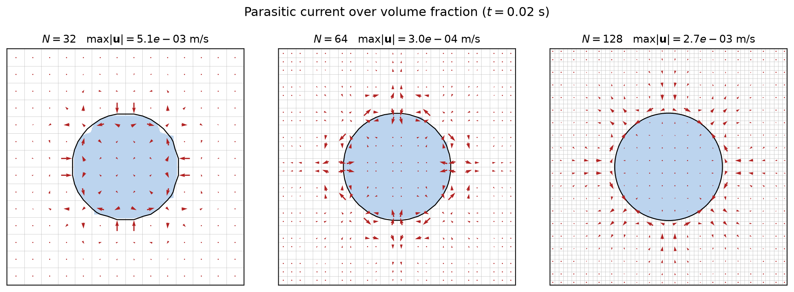
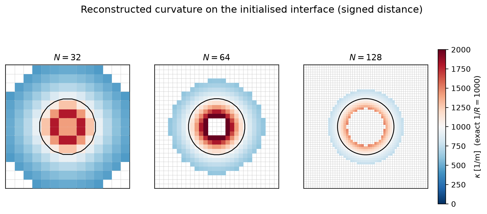
\(N=32/64/128\), mesh on every panel. Parasitic current = a symmetric vortical pattern at the interface (top, run-time); reconstructed \(\kappa\) on the initialised interface (bottom) is a clean \(\approx\!1/R\) band that tightens with refinement — \(N{=}128\) the most accurate (converges, cf. curvature-accuracy slide). Run-time roughening is a transport effect — see the mechanism slide.
Part 4 of 5
Conclusions
the working method — convergence on hex & polyhedral meshes, and two-phase coupling
- 1The level set & the phase indicator
- 2Semi-Lagrangian advection
- 3Two-phase flow
- 4Conclusions
- 5Software design
Previously: Two-phase flow · Next: Software design
Semi-Lagrangian — convergence summary
quadraticWeightedLeastSquares value fit, reversed flows;
least-squares order of the geometric shape and volume-conservation error over a uniform
refinement ladder — hexahedral and polyhedral (cfMesh) at matching resolution.
| case | mesh | ladder | shape order | volume order | notes |
|---|---|---|---|---|---|
| 2D vortex | hex | \(N\!=\!32\to256\) (\(\sqrt2\)) | 2.97 / 2.59 | 2.98 / 2.94 | CFL \(\tfrac12\) / 1 — order CFL-independent |
| 3D shear | hex | \(N\!=\!32\to128\) (\(\sqrt[3]{4}\)) | 2.50 | 3.25 | filament-free smooth flow |
| 3D shear | poly | \(1/32,1/50\) | 2 lvl | 2 lvl | cfMesh; box-limited spot-check (errors \(\sim\)hex) |
| 3D deformation | hex | \(N\!=\!32\to160\) (\(\sqrt[3]{4}\)) | 1.36 | 1.86 | thin filament under-resolved |
| 3D deformation | poly | \(1/32\to1/128\) | 1.46 | 2.51 | cfMesh, face-neighbour stencil |
Mesh-agnostic: on the reliable 4–5-level comparison
(deformation) the shape-error order matches hex↔poly (1.36 vs 1.46); hex shear is
\(\approx2.5\), poly shear spot-checked at 2 levels. Implementation: the memory-lean
uncachedQuadraticWeightedLeastSquares is cell-for-cell identical to the cached fit
(~37% the memory, ~1.4× CPU); on polyhedra the compact face-neighbour stencil is the
mesh-appropriate choice (equivalent accuracy, cheaper & better-conditioned). The
\(\||\nabla\psi|-1\|\) order is low (no reinitialization — future work).
Which method — by problem
- Prescribed-velocity level-set transport → the semi-Lagrangian solver
leiaSemiLagrangeLevelSetFoamwithquadraticWeightedLeastSquares: second order (2D and 3D shear; reduced only where the deformation filament is under-resolved), CFL-independent up to CFL 1, and no linear solve. - Any mesh → the same solver runs on hexahedral and general polyhedral (cfMesh) meshes at the same convergence order — point-neighbour stencil on structured cells, compact face-neighbour stencil on polyhedra.
- Coupled two-phase flow (\(\mathbf U\) from a one-field Navier–Stokes solve) →
leiaSemiLagrangianLevelSetTwoPhaseFoam: the interface curvature comes symbolically from the same reconstruction, giving a converging Laplace jump and currents that decay on coarse meshes (static droplet, reinit-free). The coupling is balanced-force; instrumented + frozen-interface tests trace the fine-mesh growth to a transport-coupled feedback. The curvature-delivery lever is now closed — the stabilized foot-point face re-referencing delivers \(O(h^{2.04})\) — and the surviving pairing is that delivery plus minimal \(\psi\)-profile maintenance (the biharmonic band filter); signed-distance consistency remains the structural lever. - Open item: no reinitialization, so \(|\nabla\psi|=1\) is not maintained over long integrations (a redistancing partner is future work); explicit surface tension imposes a capillary time-step limit.
All numbers regenerate from config/uncachedConv2Dvortex.yaml (2D) and uncachedConv3D{shear,deformation}{,Poly}.yaml (3D hex + polyhedral); curated CSVs in doc/paper/sl_convergence*.csv.
Part 5 of 5
Software design
runtime model selection; add a model without touching existing code
- 1The level set & the phase indicator
- 2Semi-Lagrangian advection
- 3Two-phase flow
- 4Conclusions
- 5Software design
Previously: Conclusions · Next: — (end)
Software Design
Runtime Model Selection
The maths and discretization of every model are settled. This section shows how they plug together: one runtime-selectable object per concept, chosen from a dictionary, discovered from the object registry.
Runtime selection design
- Abstract base phaseIndicator with an RTS table +
New(const fvMesh&) - Concrete:
geometric,detrixheAslam,heaviside - Chosen from
fvSolution:
levelSet / phaseIndicator / type - Fields (
psi,alpha,NarrowBand,nc) discovered from the object registry by configurable name keys.
Same pattern, everywhere
RTS + object registry = pluggable, KISS.
Architecture map
One library of runtime-selectable models feeds two thin solvers; a Snakemake suite verifies them.
Add your own model — without touching existing code
The velocity-extension hierarchy is runtime-selected (open/closed): a new model is a new class, no edits to existing ones.
- Derive from interfaceExtension (reuse the seed / band / flux backbone) — or from velocityExtension for full control.
TypeName("myModel");+ a(const fvMesh&)constructor.addToRunTimeSelectionTable(velocityExtension, myModel, Mesh);- Implement the one pure-virtual
extend()(fillUext_in the band from the pinned seed layer). - Add the
.Cto src/leiaLevelSet/Make/files;wmake. - Select at runtime:
levelSet{ velocityExtension{ type myModel; } }.
Templates: anisotropicDiffusion.C (one linear solve) and pseudoTime.C (iterative march).
Skeleton
// myExtension.H
class myExtension : public interfaceExtension
{
public:
TypeName("myModel");
explicit myExtension(const fvMesh& mesh) : interfaceExtension(mesh) {}
virtual ~myExtension() = default;
protected:
virtual void extend() override; // the only thing a model must define
};
// myExtension.C
addToRunTimeSelectionTable(velocityExtension, myExtension, Mesh);
void Foam::myExtension::extend()
{
// seedCells_ already hold U_Sigma (Dirichlet); nHat_, band_ are built.
// Propagate Uext_ through the band so (n . grad) Uext = 0, seed pinned.
// e.g. fvm::laplacian(...) / fvm::div(...) + fvMatrix::setValues(seedCells_, ...).
}No existing model, solver, or case is modified — only a
new class + a Make/files line + a dictionary type.